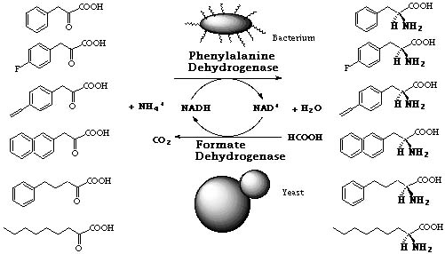
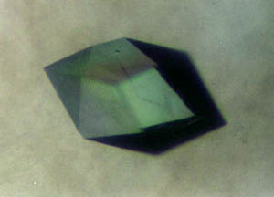
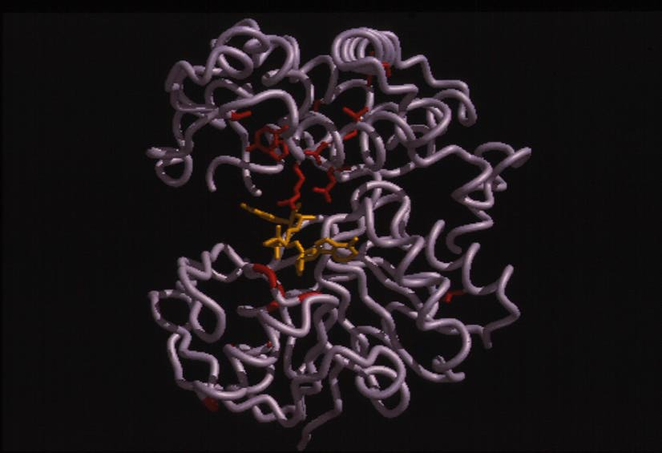
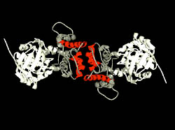
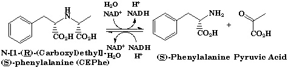
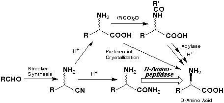
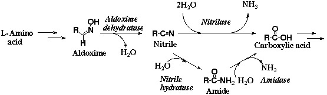

酵素化学工学部門（浅野泰久教授、加藤康夫助教授、米田英伸助手）
通常の化学反応が強酸、強アルカリ、熱、圧力等において激しい反応条件を必要とするに対して、酵素の反応は、温和な条件下において進行し、公害がなく省エネルギーに役立つ極めて優れた性質を示す。例えば、酵素を加えると化学反応が105〜10 7倍も加速されたり、1 グラムの酵素が数百キログラムもの生産物を作ることもまれではない。
酵素化学工学部門では、この酵素を有機合成の触媒として用いることを目的として、新規微生物酵素の自然界からのスクリーニングと、それらを有効に利用する研究を行っている。すなわち酵素化学、応用微生物学、遺伝子工学、有機合成化学等の技術を総合的に用いて、ペプチド、アミノ酸、ニトリル、核酸、合成高分子等に作用する微生物由来の新規な加水分解酵素、酸化酵素、脱水素酵素、リアーゼ類、転移酵素、異性化酵素等の単離を行うと共に、遺伝子組換えによる大量生産やそれらの一次構造と性質を解明し、これらの酵素の有機合成における触媒作用や臨床酵素としての応用に関する研究を行う。進化分子工学を用いる酵素の性質の改変についての知見も蓄積している。
実際の実験手法としては、自然界からの新しい微生物の分離、同定、酵素の精製と酵素化学的諸性質の検討、遺伝子組換えによる酵素の大量発現、一次構造の解明、 酵素の改変、および基質の有機合成等を行っている。以上を総合して、酵素反応を最適化し、合成プロセスに組み入れるべく研究を行っている。次に、現在の主な研究課題を次に示す。いずれも我々が開発した新酵素を対象としている。
（１）アミノ酸脱水素酵素に関する研究
1.1 フェニルアラニン脱水素酵素
アミノ酸脱水素酵素に関する基礎的な知見の蓄積を広く行っている。フェニルアラニン脱水素酵素は、ドイツのKulaらが1984年にBrevibacterium 属細菌に活性を認めた新酵素である。我々は、独自にこの酵素の生産菌を広く微生物界にスクリーニングし、集積培養によって土壌より分離したSporosarcina ureae SCRC-R04、およびBacillus sphaericus SCRC-R79a、並びに保存菌のB. badius IAM 11059に本酵素活性を認めた。次に、本酵素を結晶状に単離し、その酵素化学的諸性質を初めて明らかにした。これらの酵素はいずれも分子量310,000〜360,000で、分子量39,000〜42,000の同等なサブユニット8個からなる。本酵素は、NAD+を補酵素とする酸化的脱アミノ化反応においてL-フェニルアラニンをはじめとする疎水的L-アミノ酸を基質とした。 我々の研究を基にして、フェニルアラニン脱水素酵素には、酵素番号（EC 1.4.1.20) が与えられた。
メタノール資化性酵母Candida boidiniiより精製した蟻酸脱水素酵素をNADHの再生用の酵素として本酵素と組み合わせて用い、蟻酸アンモニウムと触媒量のNAD+の存在下、各種のα-ケト酸から各種のL-アミノ酸を収率良く合成した。フェニルピルビン酸を基質として116g/literのL-フェニルアラニンを定量的に合成することができた。α-ケト酸の構造が基質として必須であることが明らかとなった。また、B. sphaericusの本酵素は、α-ケト酸の疎水性置換基の部分にはかなり立体的にかさ高い基質であっても受け入れることがわかった。アンジオテンシン変換酵素阻害剤エナラプリル等の構成成分であるL-ホモフェニルアラニンも収率良く合成できる。また、本酵素は13Nを用いてL-フェニルアラニン、L-チロシン、および L-DOPA 等を標識するのにも有効であり、代謝研究に利用することができる。
B. badiusの本酵素は、血液中のL-Pheの定量に有効であり、新生児フェニルケトン尿症のマススクリーニングの素子として1992年に厚生省の認可を受け、現在全国的に使用されており、新生児の約30%が本法で検査されている。

フェニルアラニン脱水素酵素を用いるL-アミノ酸の合成
1.2 オピン脱水素酵素 
土壌より分離したArthrobacter sp. 由来の新酵素オピン脱水素酵素は、分子量約36,000のホモダイマーであり、NAD+を補酵素とし、オピンに作用してL-アミノ酸とα-ケト酸を生成する酸化還元酵素である。L-アミノ酸部分は、比較的疎水性の高いL-アミノ酸を基質とし、α-ケト酸部分は、ピルビン酸、α-ケトグルタール酸、オキザロ酢酸、α-ケト酪酸を基質とする。詳細な基質特異性の検討の結果、本酵素をN-[1-D-(carboxyl)ethyl]-L-norvaline: NAD+ oxidoreductase (L-norvaline-forming: EC 1.5.1.-, オピン脱水素酵素(ODH))と命名した。最近、英国Sheffield大学、Rice教授との共同研究で、本酵素のX-線結晶構造解析に成功し1.8Å分解能における立体構造を明らかにした。本酵素の結晶は、斜方晶系に属し、空間群はP21212であった。本酵素は大きく2つのドメインからなり、2つのドメインの裂け目のうち、N-末端側のヌクレオチド結合部位にNAD+が結合していた。得られた高次構造の結果をもとにした、本酵素の反応機構の解明および機能改変について検討を進めている。



オピン脱水素酵素が触媒する反応
（２）D-アミノ酸アミド加水分解酵素に関する研究
D-アミノ酸アミド加水分解酵素の反応中間体として想定されるD-アミノアシル-酵素複合体が加水分解されれば、D-アミノ酸が生成する。水よりも求核性の高い有機アミンがこれを脱アシル化すればD-アミノ酸を含む新たなペプチド結合が生成される。一方、下図のように、そのような酵素が存在すれば、ストレッカー法で安価に合成可能なラセミ体のアミノ酸アミドを不斉加水分解してD-アミノ酸を与える、新しい酵素的合成法にも発展できる。この合成では、アミノアシラーゼを用いるアシルアミノ酸の光学分割よりも短い3ステップでD-アミノ酸に到達できることになる。しかしながら、そのような酵素は従来知られていなかった。我々は、このような背景から、D-アミノ酸アミドの選択的な加水分解反応を触媒する未知の酵素をスクリーニングにより得ることを計画した。
D-アミノペプチダーゼ（Ochrobactrum anthropi）、アルカリD-ペプチダーゼ（Bacillus cereus）、D-アミノ酸アミダーゼ（O. anthropi）の新規なD-立体特異的なペプチドやアミノ酸アミド加水分解酵素のスクリーニング、酵素化学的諸性質および反応機構の検討、一次構造の解析並びにD-アミノ酸含有ペプチドの酵素的合成への利用について研究してきた。これらの一群の酵素がβ-ラクタマーゼ等のペニシリン認識酵素との相同性を有することを発見した。これらの酵素の進化過程の考察やペニシリン系抗生物質の作用機作に関する新たな研究の展開を計っている。また、これらのD-立体特異的なペプチド加水分解酵素群をアミノ酸アミドの光学分割によるD-アミノ酸やD-アミノ酸オリゴマーの合成に利用している。また、進化分子工学的手法によりD-アミノ酸アミダーゼの熱安定性を向上させた。
2.1 D-アミノペプチダーゼ
集積培養法や馴養培養法を用いて、D-アミノ酸アミドを窒素源として生育する多数の微生物を分離した。候補株からそのつど酵素を精製し、立体選択性を確認する二次スクリーニングを経て、数種の微生物株候補株を選択した。その結果、細菌Ochrobactrum anthropi SCRC C1-38 株を得た。D-アラニンアミドを基質としてD-アラニンを生成する酵素を、O. anthropi SCRC C1-38の無細胞抽出液より比活性で約2,800倍に精製した。本酵素は、分子量約 57,000のサブユニット 2個から成る分子量約115,000の蛋白である。本酵素の基質特異性を明らかにするために多数の基質を合成した。本酵素は、ペプチドを最も良好な基質とすること、およびペプチドのアミノ末端から加水分解する反応形式であることから、エキソペプチダーゼの一種であるアミノペプチダーゼであることが明らかである。また、基質のＮ末端がD-アミノ酸の立体を要求することから、新酵素「D-アミノペプチダーゼ」と命名した。D-アミノペプチダーゼには、酵素番号 (E.C. 3.4.11.19) が与えられている。
本酵素を高発現する大腸菌形質転換株を培養液と同じ菌体濃度とし、ラセミ体のアラニンアミド塩酸塩からのD-アラニン合成を行った。高濃度のアラニンアミド塩酸塩を、分割フィードせず、一度に反応液に加えて作用させたところ、短時間に定量的転換が実現できた。本酵素は、アミノ酸アミドに対する耐性が非常に高く、また、菌体によるラセミ化や、L-アラニンアミドの加水分解等の副反応も無いことが判明した。基質濃度5Mでは約4.5時間で定量的なD特異的加水分解が起こり、生成物濃度は、2.5M（約220g/liter）であった。
本酵素は、有機溶媒中では、D-アラニンメチルエステルの3-アミノペンタンによるアミノリシス反応を触媒し、D-アラニン3-アミノペンタンアミドを与えた。水飽和の酢酸ブチル、トリクロロエタンあるいはトルエン等の有機溶媒中に、ウレタン型プレポリマーPU-6で固定化した本酵素を触媒として加え、ラセミ体のアラニンエステルとアルキルアミンの縮合反応を行うと、D-アラニンアルキルアミドのみが定量的に得られた。更に固定化酵素を用いて各種のD-アミノ酸アミドを合成した。本法はアミノ基の保護を必要とせず、ラセミ体のアミノ酸エステルよりD体のアミノ酸アミドのみを選択的に合成出来る新しいアミド合成法である。
2.2 アルカリD-ペプチダーゼ
ところで、細菌の細胞壁には、あまり存在しない(D-Phe)4等に作用する酵素が存在すれば、どのような構造と機能を有するのだろうか。土壌を分離源とし、化学合成した(D-Phe)4を含むLB培地を用いて集積培養を行い、Bacillus cereus DF4-B株を分離した。(D-Phe)4加水分解酵素活性は培養液中に存在した。
合成基質を利用して、基質特異性を詳細に検討したところ、本酵素は比較的疎水性の高いD-アミノ酸ペプチドに特異的に作用するジペプチジルペプチダーゼ様エンドペプチダーゼであることがわかった。本酵素反応の至適pHは10.3周辺のアルカリ側にあったので、本酵素を「アルカリD-ペプチダーゼ」 (ADP, D-stereospecific peptide hydrolase (EC 3.4.11.-) ) と命名した。次に、本酵素遺伝子の大腸菌へのクローニングを行い、質量分析法を併用して、分子量約37,952のモノマー蛋白質であることを明らかにした。本酵素を用いて、D-Pheのオリゴマーの合成が可能である。
2.3 D-アミノ酸アミダーゼ
O. anthropi SCRC SV3株から精製した酵素は、D-フェニルアラニンアミド等の比較的かさ高いD-アミノ酸アミドに作用したが、D-アミノペプチダーゼ活性を示さなかった。本酵素は、「D-アミノ酸アミダーゼ」と呼ぶべき新しい酵素である。また、進化分子工学的手法によりD-アミノ酸アミダーゼの熱安定性を向上させた。わずかに、2ケ所の変異により酵素の熱安定性が約5℃上昇し、最大速度にも約２倍の向上が認められた。本酵素を高発現する大腸菌形質転換株を用いて、DL-フェニルアラニンアミドの光学分割を行い、約100g/literのD-フェニルアラニンを合成した。

D-立体特異的なペプチド加水分解酵素を用いるD-アミノ酸の合成 （３）不飽和結合に作用する新規リアーゼに関する研究
リアーゼ類は、C-C、C-N、C-O等の化学結合に作用して、化学基の脱離を触媒し二重結合を生成する反応、および逆に二重結合に作用し化学基の付加反応を触媒する。これらの酵素は、補酵素を要求しない特徴を持ち、光学活性ではない二重結合の部位に立体選択的に作用して、100%の理論収率で光学活性物質を合成することができる。
3.1 マレート・ヒドラターゼ
マレイン酸からのD-リンゴ酸の合成
強いマレート・ヒドラターゼ活性を有する細菌Arthrobacter sp.を土壌から分離し、休止菌体反応によって87g/literのD-リンゴ酸が72%の収率で得られた。
イタコン酸からのシトラマル酸の合成
Alcaligenes denitrificans を反応に供し、28g/literの(S)-(+)シトラマル酸が蓄積した。変換率は80.0%
3.2 3-メチルアスパルターゼ
土壌より3-メチルアスパルターゼ活性を有する通性嫌気性菌を得、それらを用いてメサコン酸、エチルフマル酸およびクロロフマル酸に対するアミノ基付加反応を行い、それぞれ光学的に純粋なthreo-(2S,3S)-3-メチル-アスパラギン酸、threo-(2S,3S)-3-エチル-アスパラギン酸、threo-(2R,3S)-3-クロロ-アスパラギン酸を好収率で合成した。現在、本酵素の結晶構造解析をSheffield大学のRice教授らと行っている。
3.3 オキシムデヒドラターゼ
ニトリルヒドラターゼは、浅野が合成高分子の分解研究の途上に、京都大学農場で分離したRhodococcus rhodochrous sp. J-1株（Arthrobacter sp. J-1株）において発見命名したものである。ニトリルヒドラターゼは、今や重要な工業用酵素となっている。日東化学工業（現三菱レイヨン）は、1985年から酵素的なアクリルアミド合成を開始し、1988年には、浅野によって分離された Pseudomonas chlororaphis B23株を用いて、1991年には R. rhodochrous sp. J-1株を用いて、年間30,000トンのスケールで微生物を用いる製造が行われている。また、1999年からはフランスのSNF Floeger社において、 R. rhodochrous sp. J-1株を用いて、アクリルアミドを20,000 トンのスケールで製造している。また、1999年からは中国にあるロンザ社の工場で、R. rhodochrous sp. J-1株を用いて飼料用のニコチンアミドが製造されている。さらに、アメリカのDuPont社では、1998年から、 P. chlororaphis B23株を用いて5-シアノ吉草酸を製造している。
オキシムデヒドラターゼは、オキシムの微生物代謝を研究する途上にBacillus sp. に見い出した新規酵素であり、酵素学的諸性質、反応機構や一次構造を明らかにした。本酵素を用いるアルドキシムからのニトリル合成に、世界で初めて成功した。また、微生物界において、アルドキシム脱水酵素は、オキシムーニトリル経路において、オキシムおよびニトリル代謝に関与する酵素であり、ニトリルヒドラターゼやニトリラーゼの上流に位置する重要な酵素であることを解明しつつある。

オキシムーニトリル経路 （４）その他
4.1 酸性フォスファターゼ（リン酸転移酵素）
ピロリン酸をリン酸供与体としてヌクレオシドの5'位を位置特異的にリン酸化し、呈味性のある5'−ヌクレオチドのみを生成する活性を持つ菌を検索した。およそ3,000株の微生物中から得たMorganella morganiiより酸性フォスファターゼ（リン酸転移酵素）を結晶状に単離し、酵素学的諸性質の検討を行った。進化分子工学的アプローチによって、酵素の性質を劇的に変化させ（２アミノ酸残基の置換）、inosineとPPiからの5'-IMP生産反応において、対inosine収率88%で101g/literの5'-IMPを生成蓄積することに成功した。本酵素のX線構造解析にも成功している。
4.2 光学活性モノアシル化グリセロールの合成
4.3 酸化反応による(R)-2-ヒドロキシ-1-インダノンの合成
4.4 新しいエポキシドヒドロラーゼ